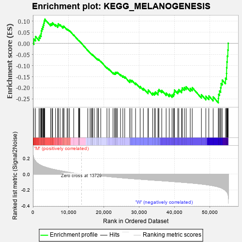
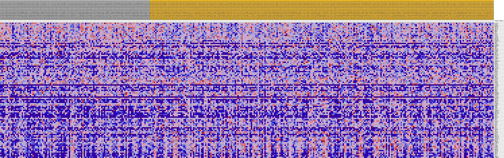
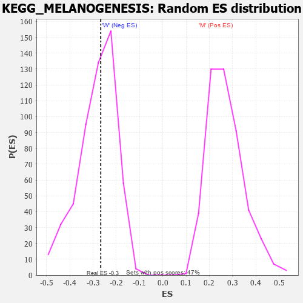

| Dataset | MUC16.MUC16.cls#M_versus_W.MUC16.cls#M_versus_W_repos |
| Phenotype | MUC16.cls#M_versus_W_repos |
| Upregulated in class | W |
| GeneSet | KEGG_MELANOGENESIS |
| Enrichment Score (ES) | -0.26725486 |
| Normalized Enrichment Score (NES) | -0.9453302 |
| Nominal p-value | 0.51588786 |
| FDR q-value | 1.0 |
| FWER p-Value | 0.999 |

| PROBE | DESCRIPTION (from dataset) | GENE SYMBOL | GENE_TITLE | RANK IN GENE LIST | RANK METRIC SCORE | RUNNING ES | CORE ENRICHMENT | |
|---|---|---|---|---|---|---|---|---|
| 1 | PLCB3 | na | 271 | 0.201 | 0.0193 | No | ||
| 2 | MAPK1 | na | 734 | 0.165 | 0.0308 | No | ||
| 3 | MAP2K1 | na | 1733 | 0.124 | 0.0276 | No | ||
| 4 | GNAI3 | na | 2040 | 0.115 | 0.0360 | No | ||
| 5 | ADCY3 | na | 2317 | 0.109 | 0.0441 | No | ||
| 6 | NRAS | na | 2362 | 0.108 | 0.0563 | No | ||
| 7 | PRKX | na | 2534 | 0.105 | 0.0659 | No | ||
| 8 | DVL1 | na | 2745 | 0.101 | 0.0742 | No | ||
| 9 | FZD5 | na | 2923 | 0.098 | 0.0828 | No | ||
| 10 | ADCY7 | na | 3090 | 0.095 | 0.0912 | No | ||
| 11 | CALM3 | na | 3186 | 0.093 | 0.1007 | No | ||
| 12 | ADCY6 | na | 3355 | 0.091 | 0.1086 | No | ||
| 13 | MAP2K2 | na | 4994 | 0.069 | 0.0873 | No | ||
| 14 | CREB3L1 | na | 5360 | 0.065 | 0.0886 | No | ||
| 15 | RAF1 | na | 5570 | 0.063 | 0.0924 | No | ||
| 16 | WNT11 | na | 6409 | 0.055 | 0.0837 | No | ||
| 17 | CAMK2D | na | 7028 | 0.049 | 0.0784 | No | ||
| 18 | WNT7B | na | 7117 | 0.048 | 0.0826 | No | ||
| 19 | WNT2 | na | 7142 | 0.048 | 0.0879 | No | ||
| 20 | EP300 | na | 7680 | 0.044 | 0.0835 | No | ||
| 21 | GSK3B | na | 8490 | 0.037 | 0.0733 | No | ||
| 22 | CREB3 | na | 8516 | 0.037 | 0.0772 | No | ||
| 23 | WNT1 | na | 8805 | 0.034 | 0.0761 | No | ||
| 24 | WNT10A | na | 9663 | 0.027 | 0.0639 | No | ||
| 25 | PLCB4 | na | 9938 | 0.025 | 0.0620 | No | ||
| 26 | FZD9 | na | 10345 | 0.022 | 0.0573 | No | ||
| 27 | CAMK2B | na | 11529 | 0.014 | 0.0376 | No | ||
| 28 | DVL2 | na | 12942 | 0.005 | 0.0125 | No | ||
| 29 | CREB3L4 | na | 12948 | 0.005 | 0.0130 | No | ||
| 30 | MC1R | na | 13094 | 0.004 | 0.0109 | No | ||
| 31 | MAPK3 | na | 13096 | 0.004 | 0.0113 | No | ||
| 32 | TCF7L2 | na | 13256 | 0.003 | 0.0088 | No | ||
| 33 | ADCY1 | na | 15524 | -0.002 | -0.0321 | No | ||
| 34 | CALML6 | na | 16160 | -0.006 | -0.0429 | No | ||
| 35 | WNT5A | na | 16494 | -0.008 | -0.0480 | No | ||
| 36 | WNT3 | na | 16797 | -0.009 | -0.0523 | No | ||
| 37 | WNT8B | na | 16799 | -0.009 | -0.0512 | No | ||
| 38 | FZD6 | na | 16835 | -0.010 | -0.0507 | No | ||
| 39 | KITLG | na | 17308 | -0.012 | -0.0578 | No | ||
| 40 | WNT4 | na | 18134 | -0.016 | -0.0708 | No | ||
| 41 | HRAS | na | 18142 | -0.016 | -0.0690 | No | ||
| 42 | CALM1 | na | 18494 | -0.018 | -0.0731 | No | ||
| 43 | GNAI2 | na | 18555 | -0.018 | -0.0720 | No | ||
| 44 | FZD3 | na | 19180 | -0.021 | -0.0808 | No | ||
| 45 | CREB1 | na | 20935 | -0.029 | -0.1090 | No | ||
| 46 | CALM2 | na | 21545 | -0.032 | -0.1162 | No | ||
| 47 | CALML5 | na | 22650 | -0.037 | -0.1318 | No | ||
| 48 | PLCB1 | na | 23067 | -0.039 | -0.1347 | No | ||
| 49 | WNT16 | na | 23337 | -0.040 | -0.1348 | No | ||
| 50 | EDN1 | na | 23342 | -0.040 | -0.1301 | No | ||
| 51 | WNT3A | na | 23617 | -0.041 | -0.1301 | No | ||
| 52 | PRKCA | na | 23890 | -0.042 | -0.1300 | No | ||
| 53 | CREBBP | na | 24772 | -0.045 | -0.1406 | No | ||
| 54 | PRKACB | na | 25430 | -0.048 | -0.1467 | No | ||
| 55 | PLCB2 | na | 25966 | -0.050 | -0.1504 | No | ||
| 56 | CALML3 | na | 27409 | -0.055 | -0.1699 | No | ||
| 57 | PRKACA | na | 27466 | -0.055 | -0.1643 | No | ||
| 58 | FZD10 | na | 27971 | -0.057 | -0.1665 | No | ||
| 59 | WNT9A | na | 29025 | -0.061 | -0.1783 | No | ||
| 60 | ADCY2 | na | 30322 | -0.065 | -0.1940 | No | ||
| 61 | CTNNB1 | na | 31234 | -0.068 | -0.2023 | No | ||
| 62 | GNAQ | na | 32552 | -0.072 | -0.2175 | No | ||
| 63 | POMC | na | 32607 | -0.072 | -0.2098 | No | ||
| 64 | TYRP1 | na | 33847 | -0.076 | -0.2231 | No | ||
| 65 | FZD2 | na | 34365 | -0.078 | -0.2231 | No | ||
| 66 | CREB3L3 | na | 34642 | -0.079 | -0.2186 | No | ||
| 67 | WNT5B | na | 35369 | -0.081 | -0.2221 | No | ||
| 68 | WNT10B | na | 35414 | -0.081 | -0.2131 | No | ||
| 69 | WNT6 | na | 35632 | -0.082 | -0.2072 | No | ||
| 70 | WNT7A | na | 36430 | -0.084 | -0.2116 | No | ||
| 71 | WNT8A | na | 37669 | -0.088 | -0.2234 | No | ||
| 72 | GNAS | na | 38550 | -0.091 | -0.2285 | No | ||
| 73 | KIT | na | 39345 | -0.093 | -0.2316 | No | ||
| 74 | ADCY4 | na | 39739 | -0.095 | -0.2273 | No | ||
| 75 | ASIP | na | 39973 | -0.095 | -0.2201 | No | ||
| 76 | FZD7 | na | 40034 | -0.096 | -0.2096 | No | ||
| 77 | TCF7 | na | 40967 | -0.099 | -0.2146 | No | ||
| 78 | DVL3 | na | 41260 | -0.100 | -0.2079 | No | ||
| 79 | TYR | na | 42042 | -0.103 | -0.2097 | No | ||
| 80 | PRKCG | na | 42215 | -0.103 | -0.2004 | No | ||
| 81 | KRAS | na | 42835 | -0.105 | -0.1989 | No | ||
| 82 | ADCY9 | na | 43334 | -0.107 | -0.1950 | No | ||
| 83 | MITF | na | 44492 | -0.111 | -0.2025 | No | ||
| 84 | ADCY8 | na | 45052 | -0.114 | -0.1990 | No | ||
| 85 | PRKACG | na | 47650 | -0.126 | -0.2309 | No | ||
| 86 | TCF7L1 | na | 48900 | -0.132 | -0.2376 | No | ||
| 87 | CREB3L2 | na | 49747 | -0.138 | -0.2363 | No | ||
| 88 | GNAI1 | na | 50967 | -0.147 | -0.2407 | No | ||
| 89 | PRKCB | na | 52433 | -0.162 | -0.2478 | Yes | ||
| 90 | CAMK2G | na | 52501 | -0.163 | -0.2294 | Yes | ||
| 91 | FZD1 | na | 52774 | -0.167 | -0.2142 | Yes | ||
| 92 | FZD8 | na | 53091 | -0.171 | -0.1993 | Yes | ||
| 93 | EDNRB | na | 53206 | -0.174 | -0.1805 | Yes | ||
| 94 | FZD4 | na | 53541 | -0.180 | -0.1649 | Yes | ||
| 95 | WNT2B | na | 54454 | -0.206 | -0.1566 | Yes | ||
| 96 | WNT9B | na | 54741 | -0.220 | -0.1353 | Yes | ||
| 97 | LEF1 | na | 54771 | -0.222 | -0.1091 | Yes | ||
| 98 | GNAO1 | na | 54864 | -0.227 | -0.0834 | Yes | ||
| 99 | DCT | na | 54959 | -0.233 | -0.0570 | Yes | ||
| 100 | ADCY5 | na | 55113 | -0.248 | -0.0298 | Yes | ||
| 101 | CAMK2A | na | 55224 | -0.271 | 0.0008 | Yes |

